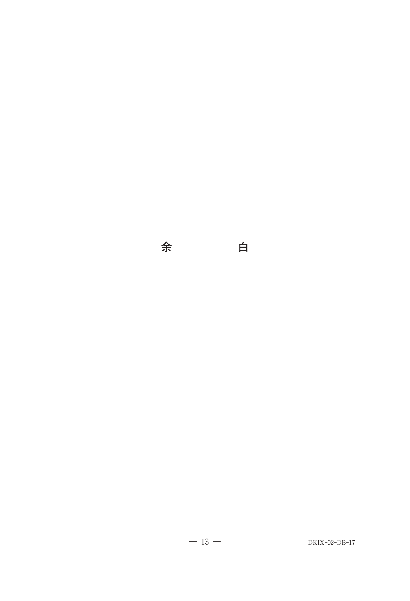
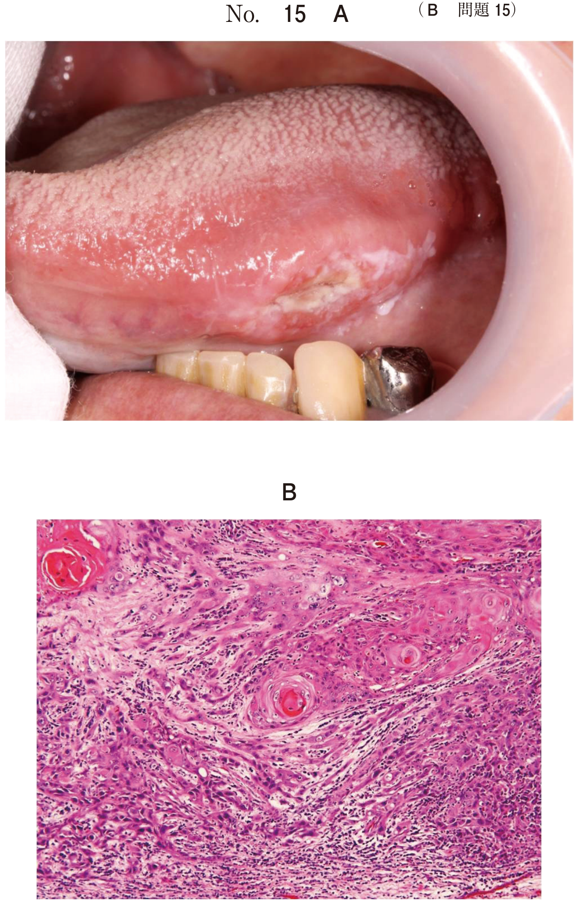
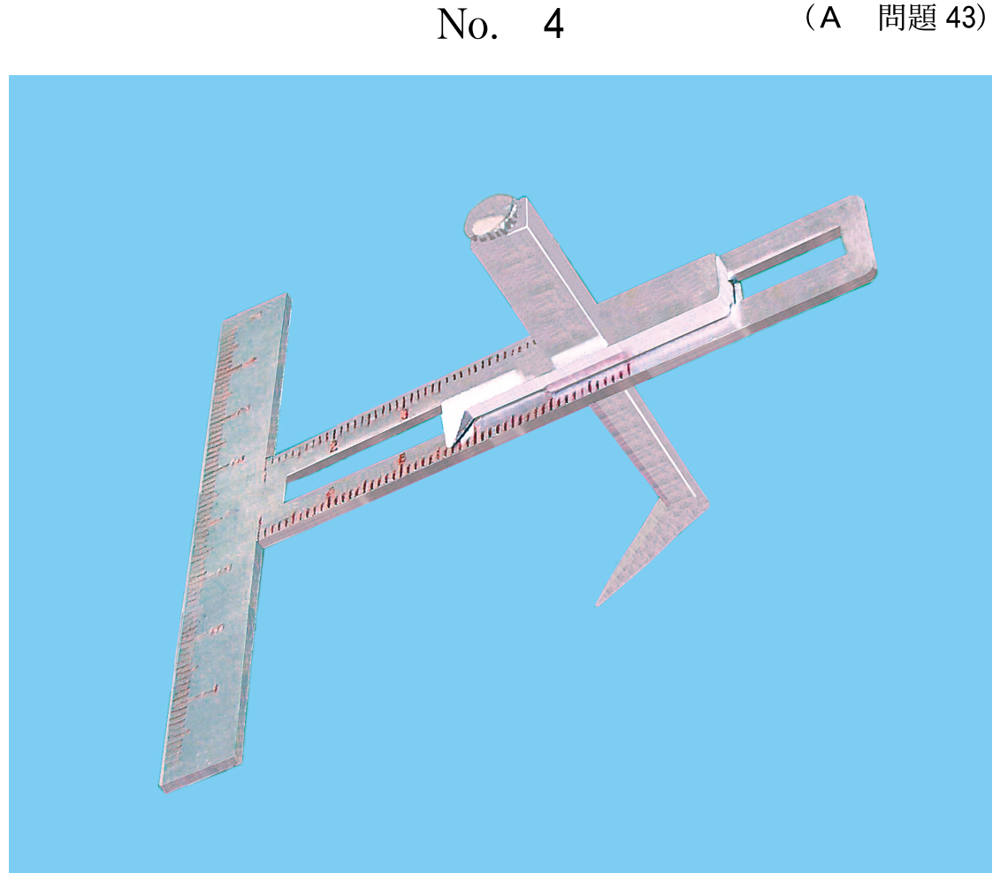
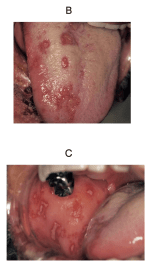
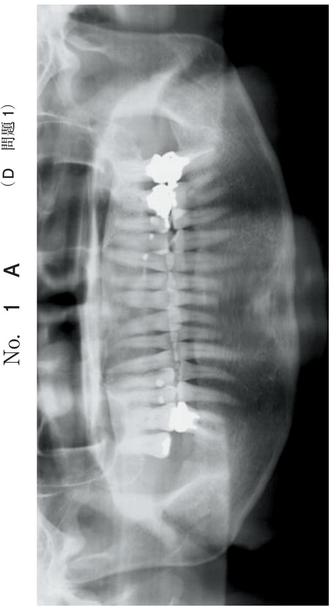
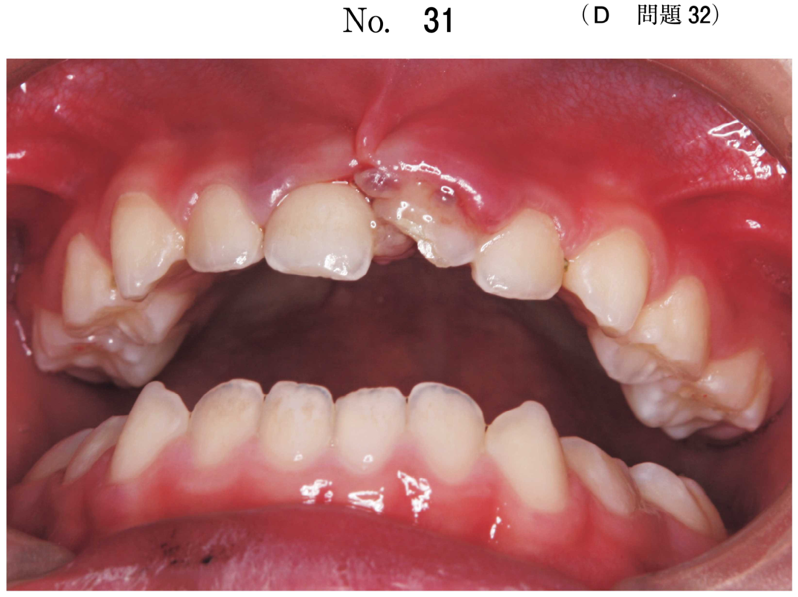
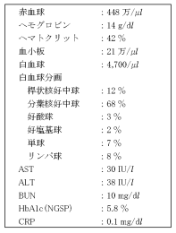
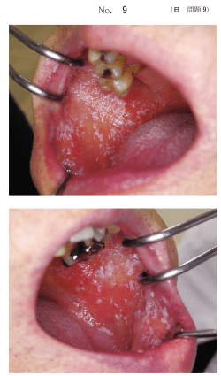
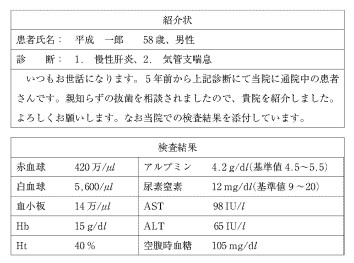
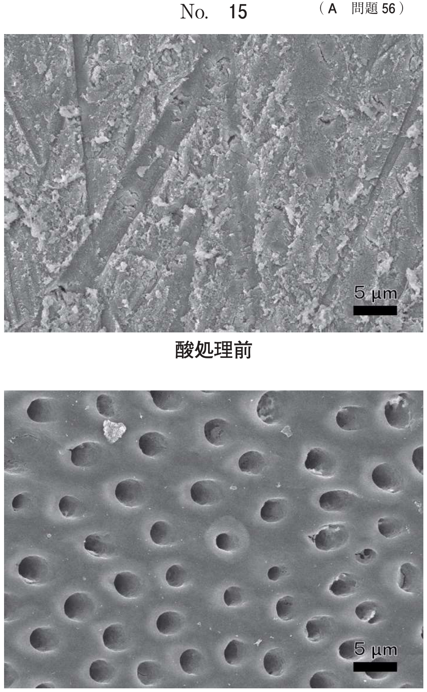

ウイルス感染症
1. ヘルペスウイルス感染症
ヘルペスウイルスの分類
| ウイルス | 略称 | 初感染 | 再活性化 | 潜伏部位 |
|---|---|---|---|---|
| 単純ヘルペスウイルス1型 | HSV-1 | 疱疹性歯肉口内炎 | 口唇ヘルペス | 三叉神経節 |
| 単純ヘルペスウイルス2型 | HSV-2 | 性器ヘルペス | 性器ヘルペス再発 | 仙骨神経節 |
| 水痘・帯状疱疹ウイルス | VZV | 水痘 | 帯状疱疹 | 脊髄後根神経節 |
| Epstein-Barrウイルス | EBV | 伝染性単核球症 | 毛様白板症 | Bリンパ球 |
疱疹性歯肉口内炎（HSV-1初感染）
HSV-1の初感染により起きる歯肉口内炎。通常は生後3〜7日で発症する。
- 好発年齢：生後6ヶ月〜3歳の乳幼児（母体からの移行抗体消失後）
- 症状：連続発熱、倦怠感から始まり、歯肉、口唇粘膜、舌、口蓋などの粘膜に小水疱→びらん。接触痛、刺激痛のため食事困難。両側性の頸部リンパ節腫脹
- 経過：約2週間で瘢痕を残さず治癒
- 検査：ウイルス分離、抗原検出、ウイルスDNA検出、抗体価は急性期と回復期の比較（4倍以上の上昇）が重要
- 治療：アシクロビル（ヌクレオシド類似化合物）の内服。含嗽、局所にアシクロビル軟膏。栄養補給
- ウイルス固有のチミジンキナーゼでリン酸化 → 三リン酸化体となりウイルスDNAポリメラーゼ活性を阻害
- DNA鎖の伸長を停止（DNA合成阻害）
- HSV、VZV、水痘に有効。チミジンキナーゼ活性の低いサイトメガロウイルスやEBVには効果がない
3日前から38.5℃の発熱と歯肉腫脹がみられた小児の口腔内写真（別冊No.17）を別に示す。検査の結果、単純ヘルペスウイルスの感染を認めた。
考えられるのはどれか。1つ選べ。

b 風疹
c 麻疹
d 帯状疱疹
e ヘルパンギーナ
f 疱疹性歯肉口内炎
【解説】小児＋発熱＋歯肉腫脹＋HSV感染 → 疱疹性歯肉口内炎。帯状疱疹はVZV再活性化で片側性。ヘルパンギーナはコクサッキーA群で軟口蓋が主体。
9歳の男児。歯磨きに伴う歯肉の痛みを主訴として来院した。38℃の発熱が2日間続いた後、口腔周囲と口腔内とに限局して小水疱が出現したという。発熱から4日目の病変部の写真（別冊No.21）を別に示す。
考えられるのはどれか。1つ選べ。

b 放線菌症
c 好中球減少症
d 単純疱疹ウイルス感染症
e 水痘・帯状疱疹ウイルス感染症
【解説】小児＋発熱＋口腔周囲と口腔内に限局した小水疱 → HSV-1初感染（疱疹性歯肉口内炎）。帯状疱疹は片側性神経支配領域に限局する点が異なる。
口唇ヘルペス（HSV-1再活性化）
HSV-1の再活性化により口唇およびその周囲皮膚に集簇性の小水疱を形成する。
- 誘因：紫外線曝露、ストレス、疲労、歯科治療、手術など
- 前駆症状として小水疱形成の数時間前から皮膚に違和感や灼熱感
- 小水疱は破れて痂皮を形成し、1週間程度で治癒
- 治療：再発病変にアシクロビル軟膏を1日数回塗布。前駆症状があればただちに軟膏塗布を開始
28歳の女性。顔貌写真（別冊No.5）を別に示す。
投与すべき薬物はどれか。1つ選べ。

b ニフェジピン
c アシクロビル
d シクロスポリン
e ブレオマイシン塩酸塩
【解説】口唇周囲の集簇性水疱 → 口唇ヘルペス。治療薬はアシクロビル。ミコナゾールは抗真菌薬、ニフェジピンはCa拮抗薬、シクロスポリンは免疫抑制剤、ブレオマイシンは抗腫瘍薬。
帯状疱疹（VZV再活性化）
水痘治癒後に神経節に潜伏していたVZVが、細胞性免疫能の低下により再活性化し、特定の神経支配領域に一致して片側性に水疱性病変を形成する。
- 好発年齢：20歳前後と60歳以上に好発
- 症状：栄養不良、過労、感冒、免疫能低下が誘因。片側性の神経支配領域に水疱が生じる
- 口腔内では水疱は膨疹、びらん、痂皮となり、色素沈着または色素脱失を残す
- 口腔内の水疱はすぐに破れ、びらんとして認められ、易出血性
- 帯状疱疹後神経痛（PHN）：皮疹治癒後も持続する強い神経痛。高齢ほど生じやすく重症化
Ramsay Hunt症候群
VZVの膝神経節再活性化による。以下の三徴を示す：
- 耳介周囲の帯状疱疹（水疱）
- 顔面神経麻痺
- 難聴・耳鳴り・めまい
帯状疱疹の治療
| 治療薬 | 用途 |
|---|---|
| アシクロビル | 抗ウイルス薬（ウイルス増殖の抑制） |
| バラシクロビル | アシクロビルのプロドラッグ。経口吸収率が高い |
| アセトアミノフェン等 | 鎮痛（疼痛管理） |
| プレガバリン、カルバマゼピン | PHN（帯状疱疹後神経痛）の治療 |
| 神経ブロック | PHNの疼痛管理 |
55歳の男性。右側顔面の疼痛を主訴として来院した。10日前から違和感を自覚するようになり、次第に増悪してきたという。初診時の顔貌写真（別冊No.6A）、舌の写真（別冊No.6B）及び口腔内写真（別冊No.6C）を別に示す。
この疾患の治療薬と使用目的との組合せで正しいのはどれか。2つ選べ。


b ピシバニール——————————免疫活性化
c アセトアミノフェン———————鎮痛
d ドセタキセル水和物———————細胞増殖の抑制
e バラシクロビル塩酸塩——————ウイルス増殖の抑制
【解説】右側顔面に限局した疼痛＋水疱 → 帯状疱疹。バラシクロビルはウイルス増殖の抑制に使用（正しい組み合わせ）。アシクロビルは抗ウイルス薬であり「細菌増殖の抑制」は誤り。アセトアミノフェンによる鎮痛は正しい。
48歳の女性。口腔内の疼痛を主訴として来院した。1週ほど前に発熱があり、その後口腔内に水疱が多発し、疼痛のため摂食困難をきたしたという。初診時の口腔内写真（別冊No.44）を別に示す。
適切な処置はどれか。2つ選べ。

b アシクロビルの投与
c 副腎皮質ステロイド薬の投与
d シクロスポリン軟膏の局所塗布
e スポンジブラシによる偽膜の除去
【解説】発熱後の口腔内水疱多発＋摂食困難 → ヘルペスウイルス感染症。アシクロビル投与と栄養補給が適切。ステロイドはウイルス感染症では禁忌（免疫抑制で悪化）。
2. HIV/AIDS
HIV感染の経過
HIV（ヒト免疫不全ウイルス）はレトロウイルスの一種で、CD4陽性Tリンパ球に感染して破壊する。
- 感染経路：血液感染（輸血、針刺し）、性行為感染、母子感染
- 感染後2〜3週で急性期症状を示すことがあり、未治療では慢性経過で免疫不全が進行してAIDSに至る
- 進行速度には個人差があり、ART導入によりAIDS発症は大幅に抑制可能
AIDS指標疾患（口腔関連）
| 口腔症状 | CD4数目安 | 特徴 |
|---|---|---|
| 口腔カンジダ症 | 400/μL前後 | 最も頻度が高い口腔症状。AIDS初期症状 |
| 毛様白板症 | 500/μL前後 | EBウイルスによる。舌側縁の白色過角化病変。悪性化しない |
| Kaposi肉腫 | 100〜200/μL | AIDS患者に特徴的な悪性腫瘍 |
| 壊死性潰瘍性歯肉炎 | 100/μL以下 | 歯間乳頭の潰瘍、激しい疼痛 |
AIDSの診断
- HIV抗体検査（スクリーニング）＋ 確認検査（Western blot法 / IC法）
- CD4陽性リンパ球数：200/μL未満でAIDS診断基準を満たす
- AIDS指標疾患（23疾患）のいずれかの発症
歯科治療時の注意
- 標準予防策（スタンダードプリコーション）の徹底
- ディスポーザブル器具の使用、ゴーグル/バイザーの着用
- 針刺し事故のリスク：経皮的曝露で感染率0.3%
- 抜歯前に内科に問い合わせ：出血傾向とウイルス抗原の有無
後天性免疫不全症候群に伴いやすいのはどれか。すべて選べ。
b Kaposi肉腫
c 尋常性天疱瘡
d 口腔カンジダ症
e 壊死性潰瘍性歯肉炎
【解説】AIDS関連口腔症状は毛様白板症、Kaposi肉腫、口腔カンジダ症、壊死性潰瘍性歯肉炎。尋常性天疱瘡は自己免疫疾患でありAIDSとの関連はない。
後天性免疫不全症候群患者に発生しやすい口腔疾患はどれか。すべて選べ。
b 毛様白板症
c カポジ肉腫
d 口腔扁平苔癬
e 口腔カンジダ症
【解説】AIDS関連口腔症状として毛様白板症（EBウイルス）、Kaposi肉腫、口腔カンジダ症が正しい。天疱瘡は自己免疫疾患、口腔扁平苔癬は金属アレルギーやストレス等が原因。
AIDSの診断に必要なのはどれか。2つ選べ。
b 脂質検査
c 組織適合検査
d 唾液分泌検査
e CD4陽性リンパ球数検査
【解説】AIDS診断にはHIV抗体検査（感染確認）とCD4陽性リンパ球数検査（病期評価、200/μL未満でAIDS）が必要。
45歳の男性。口腔内の白色病変を主訴として来院した。2週前から口腔内に違和感があり、5日前に鏡で見ると白くなっていたという。最近食欲がなく、倦怠感があるという。服用薬はない。初診時の口腔内写真（別冊No.9）を別に示す。血液検査の結果を表に示す。
口腔内病変の原因として考えられるのはどれか。1つ選べ。


b 糖尿病
c 誤嚥性肺炎
d 鉄欠乏性貧血
e 後天性免疫不全症候群
【解説】口腔内の白色病変（毛様白板症またはカンジダ症）＋倦怠感＋食欲不振 → AIDS を疑う。血液検査でCD4低下やHIV陽性所見が認められる。
かかりつけ内科医からの紹介状と検査結果を示す。
抜歯前に内科医に問い合わせるのはどれか。2つ選べ。

b 出血傾向
c 血清鉄値
d ウイルス抗原の有無
e クレアチニンクリアランス値
【解説】ウイルス性肝炎患者の抜歯時には、出血傾向（肝機能低下による凝固因子減少）とウイルス抗原の有無（感染性の評価）を確認する。
3. ウイルス性疾患と徴候
疾患と特徴的徴候の組み合わせ
| 疾患 | 原因ウイルス | 特徴的徴候 |
|---|---|---|
| 麻疹 | 麻疹ウイルス | Koplik斑（頬粘膜の白色砂粒様斑点、発疹出現の2日前） |
| ムンプス | ムンプスウイルス | 耳下腺腫大（両側性が多い） |
| 口唇ヘルペス | HSV-1 | 口唇赤唇部の集簇性小水疱 |
| ヘルパンギーナ | コクサッキーA群 | 軟口蓋の小水疱、舌下部潰瘍ではない |
| 風疹 | 風疹ウイルス | 発疹＋リンパ節腫脹。苺舌ではない（苺舌は猩紅熱/川崎病） |
疾患と徴候との組合せで正しいのはどれか。2つ選べ。
b 風疹ーーーーーーーー苺舌
c ムンプスーーーーーー耳下腺腫大
d 口唇ヘルペスーーーー偽膜
e ヘルパンギーナーーー舌下部潰瘍
【解説】麻疹→Koplik斑、ムンプス→耳下腺腫大が正しい。苺舌は猩紅熱や川崎病、偽膜は偽膜性カンジダ症やジフテリア、ヘルパンギーナの潰瘍は軟口蓋に生じる。
水疱形成を特徴とするウイルス性疾患
| 疾患 | 原因 | 好発部位 | 好発年齢・季節 |
|---|---|---|---|
| 単純疱疹（疱疹性歯肉口内炎） | HSV-1 | 歯肉・口腔粘膜全体 | 乳幼児 |
| 口唇ヘルペス | HSV-1再活性化 | 口唇赤唇部 | 成人 |
| 帯状疱疹 | VZV再活性化 | 片側性神経支配領域 | 高齢者 |
| 手足口病 | EV71・CA16 | 手掌・足底・口腔粘膜 | 小児・夏季 |
| ヘルパンギーナ | コクサッキーA群 | 軟口蓋・前口蓋弓 | 小児・夏季 |
| 水痘 | VZV初感染 | 全身（体幹→四肢） | 小児 |
天疱瘡・類天疱瘡も水疱を形成するが、これらは自己免疫疾患でありウイルス性ではない。
水疱形成を特徴とするのはどれか。すべて選べ。
b 手足口病
c 類天疱瘡
d ヘルパンギーナ
e 慢性再発性アフタ
【解説】単純疱疹・手足口病・ヘルパンギーナはウイルス性の水疱形成疾患。類天疱瘡は自己免疫性だが水疱を形成する。慢性再発性アフタは潰瘍であり水疱形成ではない。
4. 手足口病・ヘルパンギーナ
手足口病
エンテロウイルス71型とコクサッキーウイルスA16型が主な原因。好発年齢は4歳以下。夏季に流行する。
- 口腔粘膜に小水疱→アフタ様潰瘍
- 手掌・足底に小水疱を伴う発疹
- 軽症例が多く、7〜10日で自然治癒。特に治療は必要としない
ヘルパンギーナ
コクサッキーウイルスA群による感染症。夏季に流行する夏風邪の一種。
- 突然の高熱で発症。4歳以下に好発
- 軟口蓋を中心として咽頭に多数の小水疱
- 小水疱はやがてアフタ様潰瘍となる
- 2〜3日で解熱し、1週間程度で自然治癒
- 手足口病：口腔＋手足に皮疹あり
- ヘルパンギーナ：咽頭部のみに病変、手足に皮疹なし
5歳の女児。舌の疼痛を主訴として来院した。数日前から発熱、食欲不振、感冒様症状があるという。初診時の口腔内写真（別冊No.28A）と手足の写真（別冊No.28B）を別に示す。
原因として考えられるのはどれか。2つ選べ。


b エンテロウイルス
c ムンプスウイルス
d コクサッキーウイルス
e 単純ヘルペスウイルス
【解説】小児＋口腔内病変＋手足の皮疹 → 手足口病。原因はエンテロウイルス71型とコクサッキーウイルスA16型。麻疹はKoplik斑が特徴、ムンプスは耳下腺腫大。
5. C型肝炎
C型肝炎の特徴
| 項目 | C型肝炎 | B型肝炎（参考） |
|---|---|---|
| 感染症分類 | 5類感染症 | 5類感染症 |
| 感染経路 | 血液感染（経口感染しない） | 血液感染・性行為・母子感染 |
| 慢性化率 | 60〜75%（高い） | 成人感染では低い |
| ワクチン | なし | あり（HBワクチン） |
| 肝硬変・肝癌 | 進行しやすい | 進行しうる |
C型肝炎で正しいのはどれか。2つ選べ。
b 食物や飲み水により経口感染する。
c 予防にはワクチン接種が有効である。
d キャリアの半数以上が慢性肝炎へと移行する。
e キャリアの割合は30歳代より若い世代で増加している。
【解説】C型肝炎は5類感染症で正しい。キャリアの60〜75%が慢性肝炎に移行するため「半数以上」も正しい。経口感染はしない（A型・E型肝炎が経口感染）。C型肝炎にワクチンはない。若い世代ではキャリア割合は減少傾向。
6. ウイルス感染症の鑑別まとめ
初感染 vs 再活性化
| 区分 | 疾患 | 特徴 |
|---|---|---|
| 初感染 | 疱疹性歯肉口内炎 | 小児、全身症状強い、両側性 |
| 再活性化 | 口唇ヘルペス | 成人、局所症状のみ、再発性 |
| 初感染 | 水痘 | 小児、全身の水疱 |
| 再活性化 | 帯状疱疹 | 高齢者、片側性神経支配領域 |
治療薬の整理
| 疾患 | 治療 |
|---|---|
| ヘルペス・帯状疱疹 | アシクロビル / バラシクロビル |
| 手足口病・ヘルパンギーナ | 対症療法のみ（抗ウイルス薬無効） |
| 麻疹 | 対症療法。予防はワクチン |